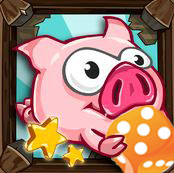

Project Title

Use this area of the page to describe your project. The icon above is part of a free icon set by Flat Icons. On their website, you can download their free set with 16 icons, or you can purchase the entire set with 146 icons for only $12!
- Client: Start Bootstrap
- Date: April 2014
- Service: Web Development